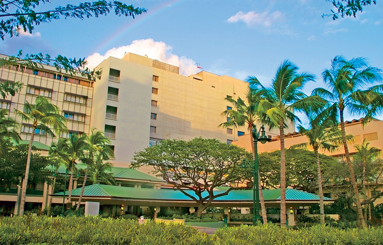
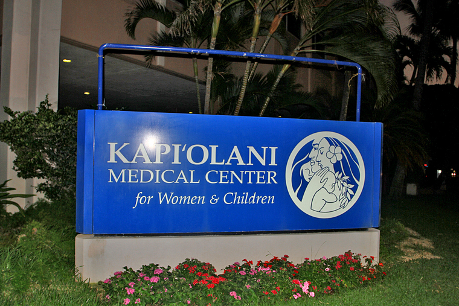

一、皇后医学中心
皇后医学中心原名皇后医院（queens hospital)，成立于1859年，由夏威夷国王卡美哈梅哈四世及其王后创建。
皇后医学中心位于夏威夷首府火奴鲁鲁，是夏威夷最大的医院，特许经营505个急性护理床和28个亚急性病床。医疗中心拥有1200多位经验丰富的医生和3000多名员工。
皇后医学中心是通过健康护理措施鉴定联合委员会（JCAHO）以及美国国家卫生保健联盟认证的专业医疗机构。 皇后医学中心是美国医学教育认证委员会指定的住院医师就业培训机构，拥有世界最先进的全基因检测技术及三维乳腺技术。
皇后医学中心网址：
QUEENS MEDICAL CENTER：http://www.queensmedicalcenter.org
二、 联盟医院妇女中心
联盟医院是夏威夷州第二大医院，由多家综合医院联合而成。
联盟医院妇女中心（Kapi'olani）是专业为妇女进行健康检查、监测、健康管理和疗养康复的健康中心。 它在拥有世界最先进的诊疗技术和康复手段的同时，还配备有瑜伽康复师、妇女健康咨询师等专业辅导人员，从检查、诊疗、 监测、康复等方面为妇女健康提供全系列服务。
1961年8月4日，美国现任总统奥巴马即于此家医院出生。
联盟医院妇女中心网址：
KAPIOLANI MEDICAL CENTER FOR WOMEN AND CHILDREN：http://www.kapiolani.org
三、医生
（1） 蔡医生 妇产科医生
美国加州大学医学博士，夏威夷大学妇产专科，夏威夷开业十多年。
经验丰富！ 认真！严谨！爱心！
（2）黛安娜 妇产科医生